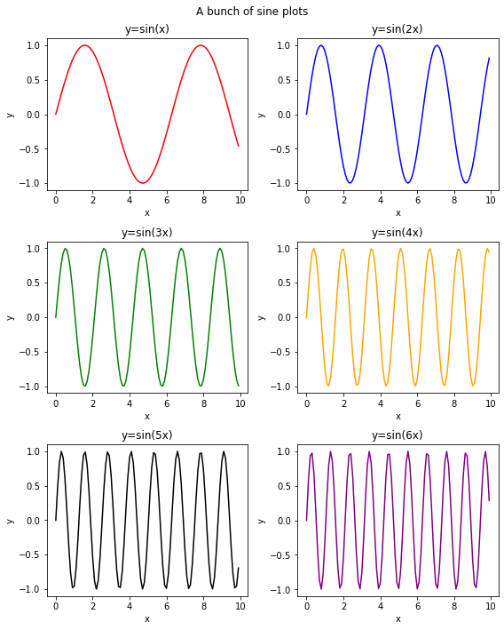

Day 7 In-class Assignment: Visualizing population growth
Contents
Day 7 In-class Assignment: Visualizing population growth#
✅ Put your name here.#
✅ Put your group member names here.
We’ve already spent a bit of time in this course thinking about the growth of money when you put it into a savings account. Now we’re going to be thinking about another kind of growth: population growth.
In this assignment you’re going to work to visualize growth of the human population. This should give you a good foundation for modeling some of our future projects!

Learning Goals:#
By the end of this assignment you should be able to:
Use the numpy module in Python to compute values that can be used in computational models for real-world phenomena.
Use matplotlib to visualize your models.
Customize matplotlib plots to maximize the information they provide.
Part 1: Modeling and visualizing population growth#
We’re going to model another evolving system – the human population. One possible model for population growth is called a logistic model. For this model, the growth of the population (\(P\)) as a function of time, \(t\), can be modeled using the following equation:
where \(K\) represents the carrying capacity of the population, which is the maximum population that the environment can sustain, and \(k_R\) is the relative growth rate coefficient (in units of 1/time). \(A\) is defined as:
where \(P_{0}\) is the initial value of the population at \(t=t_0\).
Remember that the exponential, \(e\), can be computed using the numpy module, np.exp().
1.1 Plan out your code: Calculating Total Population#
✅ As a group, design a function called calc_population.
It should take:
An initial population, \(P_{0}\)
A carrying capacity, \(K\)
A relative growth rate, \(k_R\)
A list of times in years
An initial time \(t_0\)
It should return a a list of the corresponding population values for each time in the list that was passed.
You and your groups members are expected to work this out together using a whiteboard. For virtual students, use a virtual whiteboard (e.g. Google Jamboard.
Things to think about:
how will you convert the math from the equations above into code?
How will you calculate the population for every time value in the list that was passed?
How will you return the population values?
✎ Write your plan here
1.2 Translate your plan into code: Calculating Populations#
✅ Translate your plan from the previous problem into a function that calculates the total population for a given set of initial inputs.
Work with your group to figure this out!
# Put your code here
1.3 Testing your code: Calculating Populations#
✅ Test out your code to see if it is working. Use the following values for your model:
Assume the carrying capacity, \(K\), is 12 billion
The initial population, \(P_0\), is 1 billion,
The starting time is 1800 and the end time is 2100 (assume a time step size of 1 year)
The relative population growth, \(k_R\), is 0.01 per year.
Model the population growth for these inputs and make a plot showing the results.
Work with your group to figure this out!
# Put your code here
t_list = np.arange(1800,2100,1) # make an array of year values
1.4 Varying the Parameters: Calculating Populations#
Let’s see how the different parameters effect our growth model.
✅ Calculate the population growth for all of the same input values as 1.1.3 except use a relative population growth values of:
\(k_R =\) 0.01, 0.015, 0.02, 0.03, 0.04, and 0.05
Put the lines for all five growth models on the same plot. Use plt.legend() to add a legend to the plot so that you know which line is which. You’ll want to use the label parameter in your plot command to make sure the legend has the appropriate labels for the lines.
Make sure to add appropriate axis labels and a plot title.
Work with your group to figure this out!
# Put your code here
t_list = np.arange(1800,2100,1) # make an array of year values
✅ Question: Do the population models behave as you would expect? Specifically, for the larger values of \(k_R\), does it approach, but not exceed the carrying capacity, \(K\)?
✎ Put your answer here
✅ Question: If the human population was roughly 7 billion in 2012, what would be the value of \(k_R\) that would most closely match that population at that time given the current parameters of the model?
Hint: Try adding a
plt.grid()after your plot commands to add a grid to the plot. This can be helpful for seeing where a specific point is.
✎ Put your answer here
1.5 Plot modifications#
✅ Now, modify your plot in the following ways:
Instead of plotting each model as a line, plot the models as individual points without lines connecting the points. Use the “star” symbol for the points.
Rescale the \(x\) and \(y\) range of the plot so that you only see the first 25 years of values on the \(x\)-axis and a population range of 0.5 billion to 3 billion on the \(y\)-axis. Hint: you’ll want to use the
xlimandylimfunctions inpyplot.
Make sure you still include the legend in your plot and that the axes have appropriate labels!
# Put your code here
t_list = np.arange(1800,2100,1) # make an array of year values
A SHORT DETOUR: Putting multiple plots in the same figure using subplot()#
matplotlib comes with a handy way to put mutiple plots in the same figure. A function that does this is called subplot and is part of the pyplot module. The command for making a subplot figure is something like this:
plt.subplot(3,2,1)
The above command creates and returns a set of axes for a figure with 6 plots in it arranged in 3 rows and 2 columns. The 1 at then end of the inputs is the index for which axes you are going to fill in next. For example:
plt.subplot(3,2,1)
plt.plot(xA, yA)
will plot the values in (xA, yA) in the first sub plot. And,
plt.subplot(3,2,2)
plt.plot(xB, yB)
will plot the values in (xB, yB) in the second sub plot of this figure.
The following bit of code provides an example of how the subplot function can be used. Make sure you read and understand what the code is doing!
You may also find this page of subplot examples useful: https://matplotlib.org/stable/api/_as_gen/matplotlib.pyplot.subplot.html
# initialize lists
x_list = []
y1 = []
y2 = []
y3 = []
y4 = []
y5 = []
y6 = []
# fill lists with values
for i in range(100):
x = i*0.1
x_list.append(x)
y1.append(np.sin(x))
y2.append(np.sin(2*x))
y3.append(np.sin(3*x))
y4.append(np.sin(4*x))
y5.append(np.sin(5*x))
y6.append(np.sin(6*x))
# makes a single figure that is 8 in wide and 10 in tall
plt.figure(figsize=(8,10))
plt.suptitle('A bunch of sine plots') # title for the whole figure
# plot each curve on a separate subplot
plt.subplot(3,2,1) # Generate the 1st subplot of a 3x2 set of plots
plt.plot(x_list, y1, color='red') # plot points in the first subplot
plt.xlabel('x')
plt.ylabel('y')
plt.title('y=sin(x)') # title for 1st subplot
plt.subplot(3,2,2) # Generate the 2nd subplot of a 3x2 set of plots
plt.plot(x_list, y2, color='blue') # plot points in the second subplot
plt.xlabel('x')
plt.ylabel('y')
plt.title('y=sin(2x)')
plt.subplot(3,2,3) # Generate the 3rd subplot of a 3x2 set of plots
plt.plot(x_list, y3, color='green') # plot points in the third subplot
plt.xlabel('x')
plt.ylabel('y')
plt.title('y=sin(3x)')
plt.subplot(3,2,4) # Generate the 4th subplot of a 3x2 set of plots
plt.plot(x_list, y4, color='orange') # plot points in the fourth subplot
plt.xlabel('x')
plt.ylabel('y')
plt.title('y=sin(4x)')
plt.subplot(3,2,5) # Generate the 5th subplot of a 3x2 set of plots
plt.plot(x_list, y5, color='black') # plot points in the fifth subplot
plt.xlabel('x')
plt.ylabel('y')
plt.title('y=sin(5x)')
plt.subplot(3,2,6) # Generate the 6th subplot of a 3x2 set of plots
plt.plot(x_list, y6, color='purple') # plot points in the sixth subplot
plt.xlabel('x')
plt.ylabel('y')
plt.title('y=sin(6x)')
plt.tight_layout()

Notice how each of the above six plots are made. The order of the plotting matters here. There are also other functions in matplotlib for achieving the same result.
✅ Question: What does the last command, plt.tight_layout() in the example code do? Try commenting it out to see how it changes things.
✎ Put your answer here
Assignment wrapup#
Please fill out the form that appears when you run the code below. You must completely fill this out in order to receive credit for the assignment!
from IPython.display import HTML
HTML(
"""
<iframe
src="https://cmse.msu.edu/cmse201-ic-survey"
width="800px"
height="600px"
frameborder="0"
marginheight="0"
marginwidth="0">
Loading...
</iframe>
"""
)
Congratulations, you’re done!#
Submit this assignment by uploading it to the course Desire2Learn web page. Go to the “In-class assignments” folder, find the appropriate submission folder link, and upload it there.
See you next class!
© Copyright 2021, Michigan State University Board of Trustees